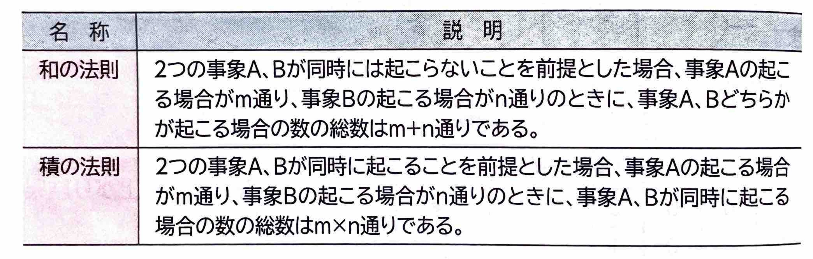
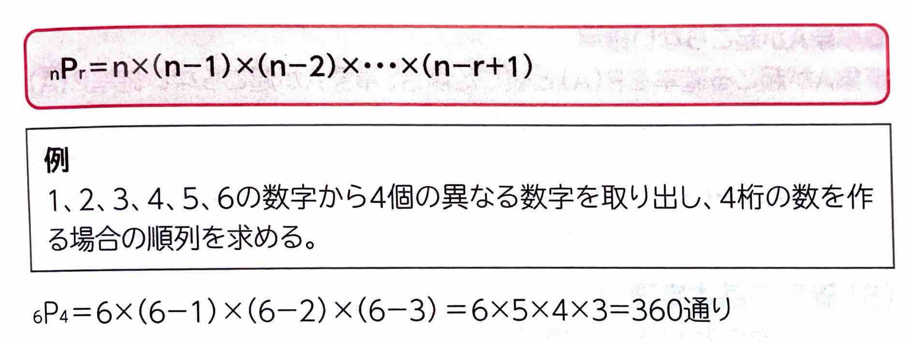
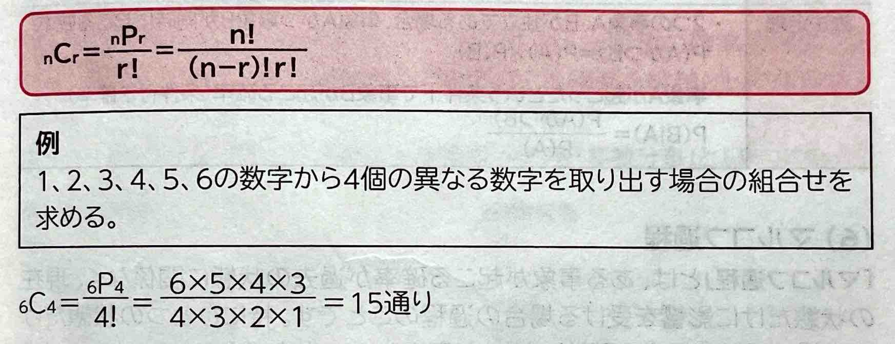
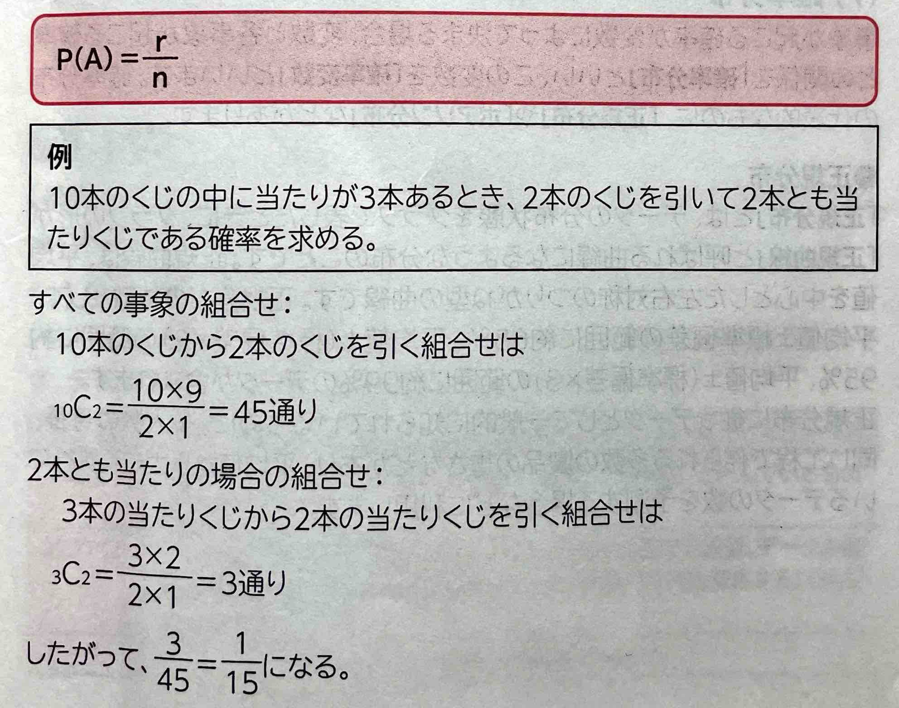
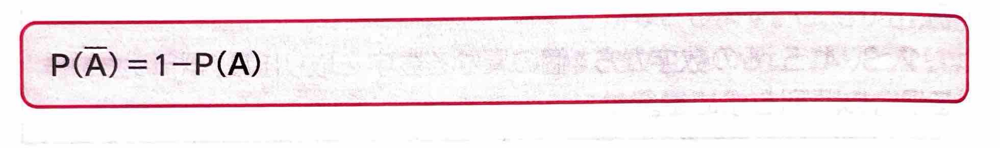
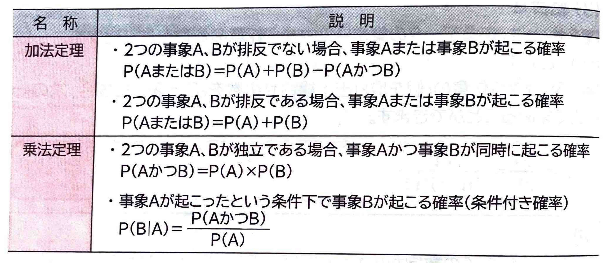
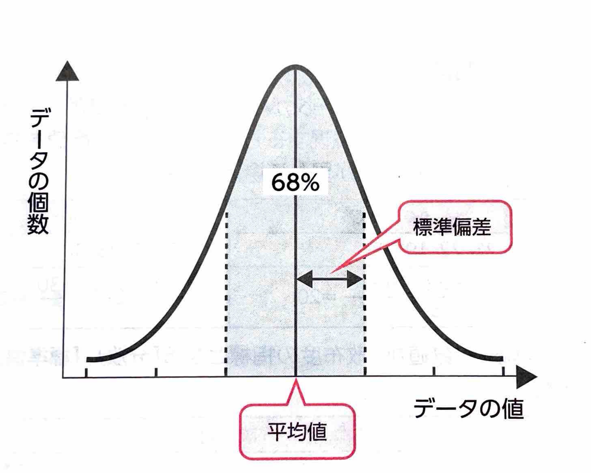
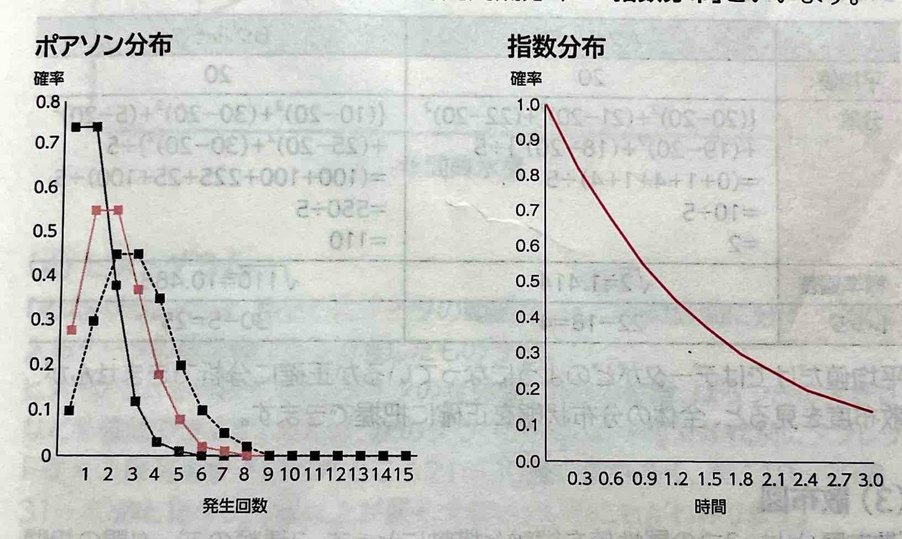

【 確率的手法 】
収集したデータを分析することにより業務上の問題点を発見し、業務改善の手がかりとします。データを分析するには、｢応用数学｣を使います。応用数学とは、数学的な知識をほかの分野に適用することを目的とした数学のことで、｢確率｣や｢統計｣などがあります。
収集したデータがどの程度正確か判断するには、確率的な手法を使います。
(1)場合の数
｢場合の数｣とは、ある現象(出来事)が起こる可能性の総数のことです。
次の2つの法則が基本となっています。

(2)順列
｢順列｣とは、あるデータの集まりの中から任意の個数を取り出して並べる方法の総数のことです。
異なるn個から任意にr個を取り出して、1列に並べた順列の数を\( {}_n{P}_r \)と表した場合、次の計算式で求めるこよができます。

(3)組合わせ
｢組合わせ｣とは、あるデータの集まりの中から任意の個数を取り出す手法の総数のことです。
異なるn個から任意のr個を取り出す組合わせの数を\( {}_n{C}_r \)と表した場合、次の計算式で求めることができます。

(4)確率
｢確率｣とは、すべての事象の数に対する、ある事象の起こり得る数の割合のことです。
●事象Aが起こる確率
すべての事象の数がn通りで、事象Aがそのうちのr通り起こる確率P(A)は、次の計算式で求めることができます。

●事象Aが起こらない確率
事象Aが起こる確率をP(A)と表した場合、事象Aが起こらない確率P(\(\overline{ A }\))は、次の計算式で求めることができます。

(5)確率の基本定理
確率には、次の2つの基本定理があります。

(6)マルコフ過程
｢マルコフ過程｣とは、ある事象が起こる確率が過去の状態に関係なく、現在の状態だけに影響を受ける場合の過程のことです。特にひとつの状態だけに影響を受ける場合を｢単純マルコフ過程｣といいます。
例えば、現在の天気が晴れの場合に翌日晴れる確率は60%、現在の天気が曇りの場合に翌日晴れる確率は50%、現在の天気が雨の場合に翌日晴れる確率は30%とするとき、これは現在の天気によって確率が変わるので、単純マルコフ過程になります。
(7)確率分布
事象が起こる確率が変数によって決まる場合、変数と各事象が起こる確率との関係を｢確率分布｣といい、この変数を｢確率変数｣といいます。確率分布の代表的なものに、｢正規分布｣や｢ポアソン分布｣などがあります。
●正規分布
｢正規分布｣とは、データの分布状態をグラフで表したときに、グラフの形が｢正規曲線｣と呼ばれる曲線になるような分布のことです。正規曲線は、平均値を中心とした左右対称のつりがね型の曲線です。正規分布の特徴として、平均値±標準偏差の範囲に約68%、平均値±(標準偏差×2)の範囲に約95%、平均値±(標準偏差×3)の範囲に約99%のデータが含まれます。
正規分布に従うデータとして一般的に知られているものに、多人数の身長、同じ工程で作られる多数の製品の重さなどがあり、平均値から大きくずれているデータの数を予測する場合などに利用します。

●ポアソン分布と指数分布
｢ポアソン分布｣とは、一定時間内にごくまれに起こる事象の確率分布のことです。事象が起こる回数を横軸に、事象が起こる確率を縦軸としてグラフにします。
また、一定時間内に起こる事象の時間間隔分布を｢指数分布｣といいます。
